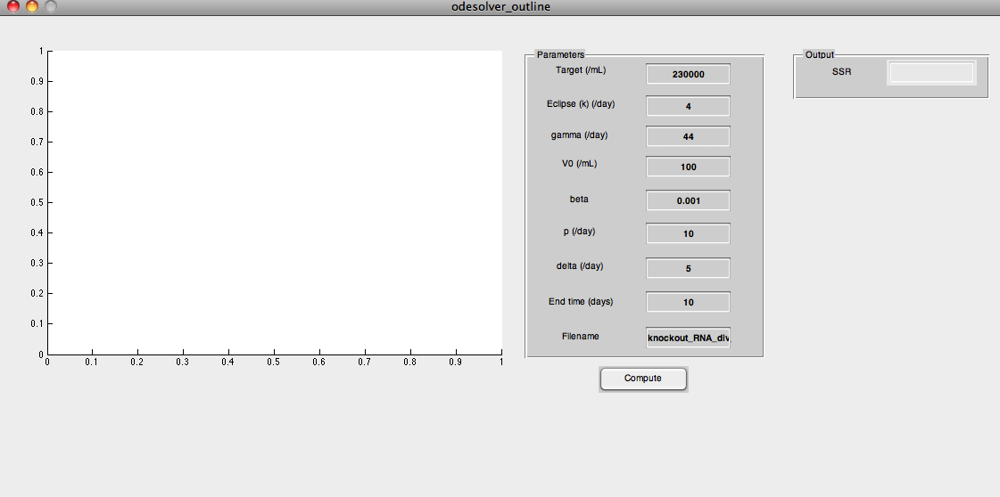

function varargout = odesolver_outline(varargin) %%%%%%%%%%%%%%%%%%%%%%%%%%%%%%%%%%%%%%%%%%%%%%%%%%%%%%%%%%%%%%%%%%%%%%%%%% % function to call ODE solver and plot results and calculate SSR % % Name - odesolver_outline % Creation Date - 18th Oct 2011 % Author - Soumya Banerjee % Website - www.cs.unm.edu/~soumya % % % Description - function to call ODE solver with eclipse phase, target cell % limited model, and plot results and % calculate SSR % % Parameters - % target - initial target cell density (/mL) % infected1 - initial latently infected cell density (/mL) % infected2 - initial productively infected cell density % (/mL) % virus - initial virus density (/mL) % beta - infectivity % p - replication rate (PFU/day) % delta - infected cell death rate )/day) % gamma - immune system clearance rate (/day) % k - eclipse phase (rate of transition from I1 to I2) (/day) % time_phase - duration of simulation(days) % time_vector - vector of measured times (days) % fileptr - handle to data file % plotfig - 1 if data and model simulation needs to be % plotted, % 0 if no plot needed % figorssr - 1 if there is a need to access the data file % (needed when need to calculate SSR or % need to plot the data in the figure), % 0 if access to data file is not needed % mac - 1 if this is my mac, % 0 if my linux desktop % interp - 1 if interpolation of simulation needed, % 0 if not needed % % % % % Assumptions - 1) all parameters passed in numerical values and are % positive real numbers % % Comments - % % License - BSD license % % Change History - % 18th Oct 2011 - Creation by Soumya Banerjee % 20th Oct 2011 - Modified by Soumya Banerjee to % validate text fields and added SSR field %%%%%%%%%%%%%%%%%%%%%%%%%%%%%%%%%%%%%%%%%%%%%%%%%%%%%%%%%%%%%%%%%%%%%%%%%% % ODESOLVER_OUTLINE MATLAB code for odesolver_outline.fig % ODESOLVER_OUTLINE, by itself, creates a new ODESOLVER_OUTLINE or raises the existing % singleton*. % % H = ODESOLVER_OUTLINE returns the handle to a new ODESOLVER_OUTLINE or the handle to % the existing singleton*. % % ODESOLVER_OUTLINE('CALLBACK',hObject,eventData,handles,...) calls the local % function named CALLBACK in ODESOLVER_OUTLINE.M with the given input arguments. % % ODESOLVER_OUTLINE('Property','Value',...) creates a new ODESOLVER_OUTLINE or raises the % existing singleton*. Starting from the left, property value pairs are % applied to the GUI before odesolver_outline_OpeningFcn gets called. An % unrecognized property name or invalid value makes property application % stop. All inputs are passed to odesolver_outline_OpeningFcn via varargin. % % *See GUI Options on GUIDE's Tools menu. Choose "GUI allows only one % instance to run (singleton)". % % See also: GUIDE, GUIDATA, GUIHANDLES % Edit the above text to modify the response to help odesolver_outline % Last Modified by GUIDE v2.5 20-Oct-2011 18:05:21 % Begin initialization code - DO NOT EDIT gui_Singleton = 1; gui_State = struct('gui_Name', mfilename, ... 'gui_Singleton', gui_Singleton, ... 'gui_OpeningFcn', @odesolver_outline_OpeningFcn, ... 'gui_OutputFcn', @odesolver_outline_OutputFcn, ... 'gui_LayoutFcn', [] , ... 'gui_Callback', []); if nargin && ischar(varargin{1}) gui_State.gui_Callback = str2func(varargin{1}); end if nargout [varargout{1:nargout}] = gui_mainfcn(gui_State, varargin{:}); else gui_mainfcn(gui_State, varargin{:}); end % End initialization code - DO NOT EDIT % --- Executes just before odesolver_outline is made visible. function odesolver_outline_OpeningFcn(hObject, eventdata, handles, varargin) % This function has no output args, see OutputFcn. % hObject handle to figure % eventdata reserved - to be defined in a future version of MATLAB % handles structure with handles and user data (see GUIDATA) % varargin command line arguments to odesolver_outline (see VARARGIN) % Choose default command line output for odesolver_outline handles.output = hObject; % Update handles structure guidata(hObject, handles); % UIWAIT makes odesolver_outline wait for user response (see UIRESUME) % uiwait(handles.figure1); % --- Outputs from this function are returned to the command line. function varargout = odesolver_outline_OutputFcn(hObject, eventdata, handles) % varargout cell array for returning output args (see VARARGOUT); % hObject handle to figure % eventdata reserved - to be defined in a future version of MATLAB % handles structure with handles and user data (see GUIDATA) % Get default command line output from handles structure varargout{1} = handles.output; % --- Executes on button press in pushbutton1. function pushbutton1_Callback(hObject, eventdata, handles) % hObject handle to pushbutton1 (see GCBO) % eventdata reserved - to be defined in a future version of MATLAB % handles structure with handles and user data (see GUIDATA) target = str2double(get(handles.target_editText,'String')); % validate field str2double returns NaN if textbox empty or % has non-numeric value if isnan(target) % test if field empty if isempty(get(handles.target_editText,'String')) line{1}='Target cannot be empty (must be a positive real number)'; msgbox(line,'Invalid value','warn'); return else % field must be non-numeric line{1}='Target must be a positive real number'; msgbox(line,'Invalid value','warn'); return end end k = str2double(get(handles.eclipse_editText,'String')); % validate field str2double returns NaN if textbox empty or % has non-numeric value if isnan(k) % test if field empty if isempty(get(handles.eclipse_editText,'String')) line{1}='k cannot be empty (must be a positive real number)'; msgbox(line,'Invalid value','warn'); return else % field must be non-numeric line{1}='k must be a positive real number'; msgbox(line,'Invalid value','warn'); return end end gamma = str2double(get(handles.gamma_editText,'String')); % validate field str2double returns NaN if textbox empty or % has non-numeric value if isnan(gamma) % test if field empty if isempty(get(handles.gamma_editText,'String')) line{1}='Gamma cannot be empty (must be a positive real number)'; msgbox(line,'Invalid value','warn'); return else % field must be non-numeric line{1}='Gamma must be a positive real number'; msgbox(line,'Invalid value','warn'); return end end V0 = str2double(get(handles.V0_editText,'String')); % validate field str2double returns NaN if textbox empty or % has non-numeric value if isnan(V0) % test if field empty if isempty(get(handles.V0_editText,'String')) line{1}='V0 cannot be empty (must be a positive real number)'; msgbox(line,'Invalid value','warn'); return else % field must be non-numeric line{1}='V0 must be a positive real number'; msgbox(line,'Invalid value','warn'); return end end beta = str2double(get(handles.beta_editText,'String')); % validate field str2double returns NaN if textbox empty or % has non-numeric value if isnan(beta) % test if field empty if isempty(get(handles.beta_editText,'String')) line{1}='Beta cannot be empty (must be a positive real number)'; msgbox(line,'Invalid value','warn'); return else % field must be non-numeric line{1}='Beta must be a positive real number'; msgbox(line,'Invalid value','warn'); return end end p = str2double(get(handles.p_editText,'String')); % validate field str2double returns NaN if textbox empty or % has non-numeric value if isnan(p) % test if field empty if isempty(get(handles.p_editText,'String')) line{1}='p cannot be empty (must be a positive real number)'; msgbox(line,'Invalid value','warn'); return else % field must be non-numeric line{1}='p must be a positive real number'; msgbox(line,'Invalid value','warn'); return end end delta = str2double(get(handles.delta_editText,'String')); % validate field str2double returns NaN if textbox empty or % has non-numeric value if isnan(delta) % test if field empty if isempty(get(handles.delta_editText,'String')) line{1}='Delta cannot be empty (must be a positive real number)'; msgbox(line,'Invalid value','warn'); return else % field must be non-numeric line{1}='Delta must be a positive real number'; msgbox(line,'Invalid value','warn'); return end end endtime = str2double(get(handles.endtime_editText,'String')); % validate field str2double returns NaN if textbox empty or % has non-numeric value if isnan(endtime) % test if field empty if isempty(get(handles.endtime_editText,'String')) line{1}='Endtime cannot be empty (must be a positive real number)'; msgbox(line,'Invalid value','warn'); return else % field must be non-numeric line{1}='Endtime must be a positive real number'; msgbox(line,'Invalid value','warn'); return end end filename = get(handles.filename_editText,'String'); % validate field if isempty(filename) line{1}='Filename cannot be empty (must be alphanumeric)'; msgbox(line,'Invalid value','warn'); return else % check if file exists in current directory if ~exist(filename,'file') line{1}='File does not exist in current directory'; msgbox(line,'File does not exist','warn'); return end end % get vector of experimental measurement times fileptr = importdata(strcat('',filename), '\t'); time_vector = fileptr.data(:,1)'; % store vector of times emp_virus_vector = fileptr.data(:,2)'; % store vector of empirically measured virus concentration % Call ode solver with parameters and return simulated virus concentration % at various time points (same time as in empirical experiments) sim_virus_vector = odecall_eclipse_tcl_jv_local(target,0,... 0,log10(V0),log10(beta),log10(p),log10(delta),gamma,k,endtime,... time_vector,filename,1,1,1,1); % Calculate the sum of squared residuals (SSR) ssr = sum((sim_virus_vector - emp_virus_vector).^2); % Show it in the textbox set(handles.ssr_editText,'String',num2str(ssr)); % Update handles structure guidata(hObject, handles); % --- Executes during object creation, after setting all properties. function axes1_CreateFcn(hObject, eventdata, handles) % hObject handle to axes1 (see GCBO) % eventdata reserved - to be defined in a future version of MATLAB % handles empty - handles not created until after all CreateFcns called % Hint: place code in OpeningFcn to populate axes1 function target_editText_Callback(hObject, eventdata, handles) % hObject handle to target_editText (see GCBO) % eventdata reserved - to be defined in a future version of MATLAB % handles structure with handles and user data (see GUIDATA) % Hints: get(hObject,'String') returns contents of target_editText as text % str2double(get(hObject,'String')) returns contents of target_editText as a double % --- Executes during object creation, after setting all properties. function target_editText_CreateFcn(hObject, eventdata, handles) % hObject handle to target_editText (see GCBO) % eventdata reserved - to be defined in a future version of MATLAB % handles empty - handles not created until after all CreateFcns called % Hint: edit controls usually have a white background on Windows. % See ISPC and COMPUTER. if ispc && isequal(get(hObject,'BackgroundColor'), get(0,'defaultUicontrolBackgroundColor')) set(hObject,'BackgroundColor','white'); end function eclipse_editText_Callback(hObject, eventdata, handles) % hObject handle to eclipse_editText (see GCBO) % eventdata reserved - to be defined in a future version of MATLAB % handles structure with handles and user data (see GUIDATA) % Hints: get(hObject,'String') returns contents of eclipse_editText as text % str2double(get(hObject,'String')) returns contents of eclipse_editText as a double % --- Executes during object creation, after setting all properties. function eclipse_editText_CreateFcn(hObject, eventdata, handles) % hObject handle to eclipse_editText (see GCBO) % eventdata reserved - to be defined in a future version of MATLAB % handles empty - handles not created until after all CreateFcns called % Hint: edit controls usually have a white background on Windows. % See ISPC and COMPUTER. if ispc && isequal(get(hObject,'BackgroundColor'), get(0,'defaultUicontrolBackgroundColor')) set(hObject,'BackgroundColor','white'); end function gamma_editText_Callback(hObject, eventdata, handles) % hObject handle to gamma_editText (see GCBO) % eventdata reserved - to be defined in a future version of MATLAB % handles structure with handles and user data (see GUIDATA) % Hints: get(hObject,'String') returns contents of gamma_editText as text % str2double(get(hObject,'String')) returns contents of gamma_editText as a double % --- Executes during object creation, after setting all properties. function gamma_editText_CreateFcn(hObject, eventdata, handles) % hObject handle to gamma_editText (see GCBO) % eventdata reserved - to be defined in a future version of MATLAB % handles empty - handles not created until after all CreateFcns called % Hint: edit controls usually have a white background on Windows. % See ISPC and COMPUTER. if ispc && isequal(get(hObject,'BackgroundColor'), get(0,'defaultUicontrolBackgroundColor')) set(hObject,'BackgroundColor','white'); end function V0_editText_Callback(hObject, eventdata, handles) % hObject handle to V0_editText (see GCBO) % eventdata reserved - to be defined in a future version of MATLAB % handles structure with handles and user data (see GUIDATA) % Hints: get(hObject,'String') returns contents of V0_editText as text % str2double(get(hObject,'String')) returns contents of V0_editText as a double % --- Executes during object creation, after setting all properties. function V0_editText_CreateFcn(hObject, eventdata, handles) % hObject handle to V0_editText (see GCBO) % eventdata reserved - to be defined in a future version of MATLAB % handles empty - handles not created until after all CreateFcns called % Hint: edit controls usually have a white background on Windows. % See ISPC and COMPUTER. if ispc && isequal(get(hObject,'BackgroundColor'), get(0,'defaultUicontrolBackgroundColor')) set(hObject,'BackgroundColor','white'); end function beta_editText_Callback(hObject, eventdata, handles) % hObject handle to beta_editText (see GCBO) % eventdata reserved - to be defined in a future version of MATLAB % handles structure with handles and user data (see GUIDATA) % Hints: get(hObject,'String') returns contents of beta_editText as text % str2double(get(hObject,'String')) returns contents of beta_editText as a double % --- Executes during object creation, after setting all properties. function beta_editText_CreateFcn(hObject, eventdata, handles) % hObject handle to beta_editText (see GCBO) % eventdata reserved - to be defined in a future version of MATLAB % handles empty - handles not created until after all CreateFcns called % Hint: edit controls usually have a white background on Windows. % See ISPC and COMPUTER. if ispc && isequal(get(hObject,'BackgroundColor'), get(0,'defaultUicontrolBackgroundColor')) set(hObject,'BackgroundColor','white'); end function p_editText_Callback(hObject, eventdata, handles) % hObject handle to p_editText (see GCBO) % eventdata reserved - to be defined in a future version of MATLAB % handles structure with handles and user data (see GUIDATA) % Hints: get(hObject,'String') returns contents of p_editText as text % str2double(get(hObject,'String')) returns contents of p_editText as a double % --- Executes during object creation, after setting all properties. function p_editText_CreateFcn(hObject, eventdata, handles) % hObject handle to p_editText (see GCBO) % eventdata reserved - to be defined in a future version of MATLAB % handles empty - handles not created until after all CreateFcns called % Hint: edit controls usually have a white background on Windows. % See ISPC and COMPUTER. if ispc && isequal(get(hObject,'BackgroundColor'), get(0,'defaultUicontrolBackgroundColor')) set(hObject,'BackgroundColor','white'); end function delta_editText_Callback(hObject, eventdata, handles) % hObject handle to delta_editText (see GCBO) % eventdata reserved - to be defined in a future version of MATLAB % handles structure with handles and user data (see GUIDATA) % Hints: get(hObject,'String') returns contents of delta_editText as text % str2double(get(hObject,'String')) returns contents of delta_editText as a double % --- Executes during object creation, after setting all properties. function delta_editText_CreateFcn(hObject, eventdata, handles) % hObject handle to delta_editText (see GCBO) % eventdata reserved - to be defined in a future version of MATLAB % handles empty - handles not created until after all CreateFcns called % Hint: edit controls usually have a white background on Windows. % See ISPC and COMPUTER. if ispc && isequal(get(hObject,'BackgroundColor'), get(0,'defaultUicontrolBackgroundColor')) set(hObject,'BackgroundColor','white'); end function endtime_editText_Callback(hObject, eventdata, handles) % hObject handle to endtime_editText (see GCBO) % eventdata reserved - to be defined in a future version of MATLAB % handles structure with handles and user data (see GUIDATA) % Hints: get(hObject,'String') returns contents of endtime_editText as text % str2double(get(hObject,'String')) returns contents of endtime_editText as a double % --- Executes during object creation, after setting all properties. function endtime_editText_CreateFcn(hObject, eventdata, handles) % hObject handle to endtime_editText (see GCBO) % eventdata reserved - to be defined in a future version of MATLAB % handles empty - handles not created until after all CreateFcns called % Hint: edit controls usually have a white background on Windows. % See ISPC and COMPUTER. if ispc && isequal(get(hObject,'BackgroundColor'), get(0,'defaultUicontrolBackgroundColor')) set(hObject,'BackgroundColor','white'); end function filename_editText_Callback(hObject, eventdata, handles) % hObject handle to filename_editText (see GCBO) % eventdata reserved - to be defined in a future version of MATLAB % handles structure with handles and user data (see GUIDATA) % Hints: get(hObject,'String') returns contents of filename_editText as text % str2double(get(hObject,'String')) returns contents of filename_editText as a double % --- Executes during object creation, after setting all properties. function filename_editText_CreateFcn(hObject, eventdata, handles) % hObject handle to filename_editText (see GCBO) % eventdata reserved - to be defined in a future version of MATLAB % handles empty - handles not created until after all CreateFcns called % Hint: edit controls usually have a white background on Windows. % See ISPC and COMPUTER. if ispc && isequal(get(hObject,'BackgroundColor'), get(0,'defaultUicontrolBackgroundColor')) set(hObject,'BackgroundColor','white'); end function ssr_editText_Callback(hObject, eventdata, handles) % hObject handle to ssr_editText (see GCBO) % eventdata reserved - to be defined in a future version of MATLAB % handles structure with handles and user data (see GUIDATA) % Hints: get(hObject,'String') returns contents of ssr_editText as text % str2double(get(hObject,'String')) returns contents of ssr_editText as a double % --- Executes during object creation, after setting all properties. function ssr_editText_CreateFcn(hObject, eventdata, handles) % hObject handle to ssr_editText (see GCBO) % eventdata reserved - to be defined in a future version of MATLAB % handles empty - handles not created until after all CreateFcns called % Hint: edit controls usually have a white background on Windows. % See ISPC and COMPUTER. if ispc && isequal(get(hObject,'BackgroundColor'), get(0,'defaultUicontrolBackgroundColor')) set(hObject,'BackgroundColor','white'); end